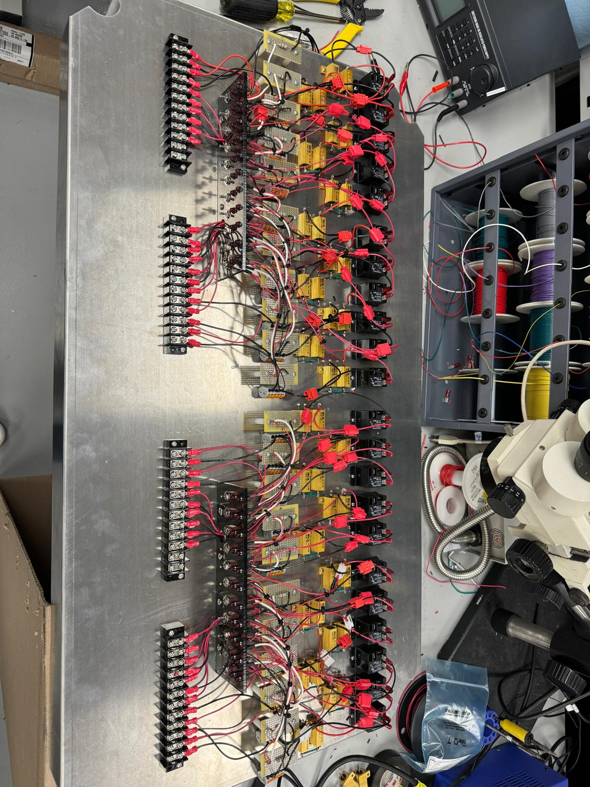

Project Overview
During my first hardware internship at Rheem Manufacturing, I collaborated with test engineers to design,
construct, and integrate PCB test fixtures. This project provided me with hands-on experience in hardware
validation, failure diagnostics, and component qualification processes.
Key Responsibilities
- Collaborated with test engineers to design PCB test fixtures
- Constructed and integrated hardware test fixtures
- Supported electrical validation processes
- Performed failure diagnostics and root cause analysis
- Conducted component qualification testing
- Developed and released engineering specifications
- Created detailed schematics and documentation
- Prepared qualification documents for compliance
- Facilitated cross-team integration and knowledge transfer
Technical Achievements
- Designed robust PCB test fixtures that improved testing efficiency
- Developed comprehensive failure diagnostic procedures
- Created detailed engineering documentation and specifications
- Ensured compliance with industry standards and regulations
- Streamlined component qualification processes
- Improved cross-team collaboration and knowledge sharing
Technologies Used
PCB Design
Hardware Testing
Electrical Validation
Failure Analysis
Component Qualification
Engineering Documentation
Test Fixtures
Project Gallery
Confidentiality Notice
Note: This project was completed as part of my internship with Rheem Manufacturing.
Due to confidentiality agreements and proprietary nature of the work, I am unable to share the
source code or detailed technical specifications. The information provided here represents
the general scope and impact of my contributions to the project.